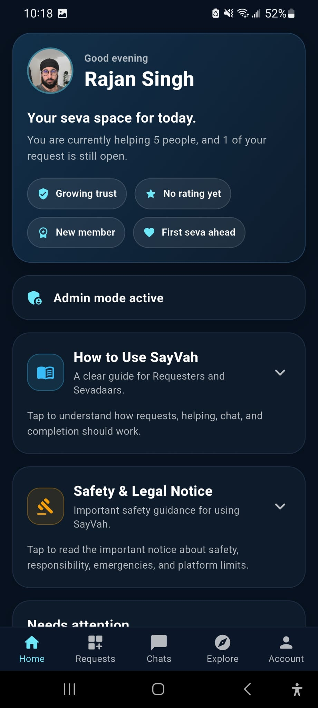
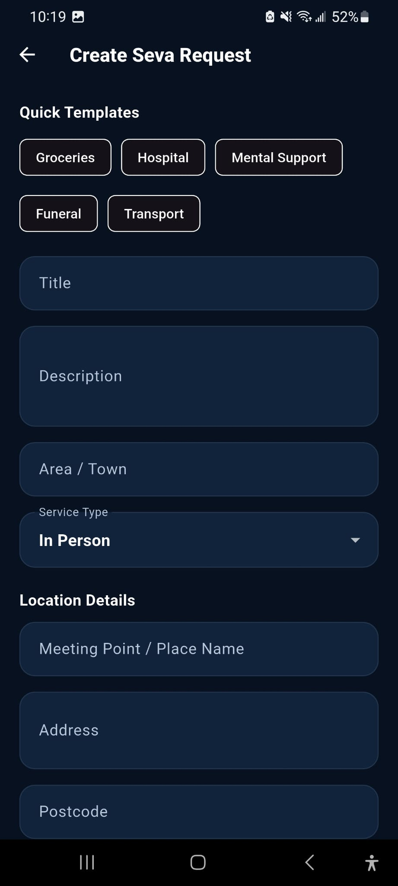
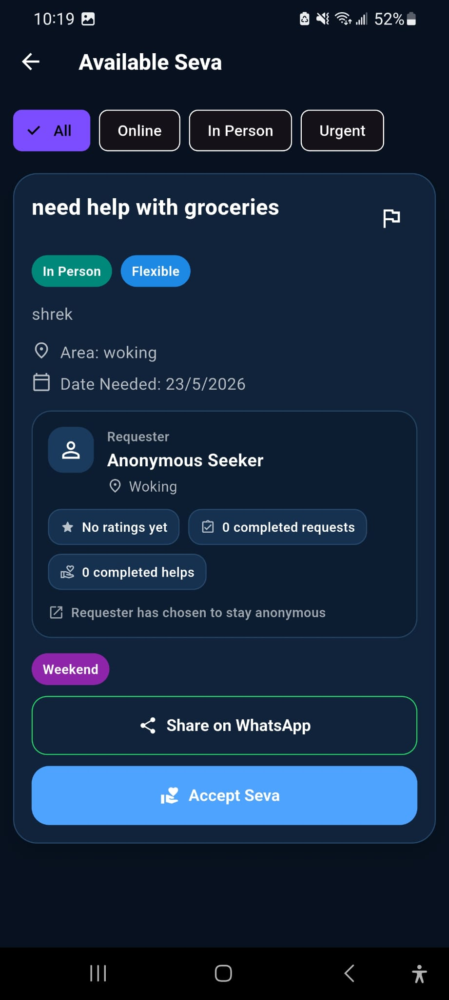
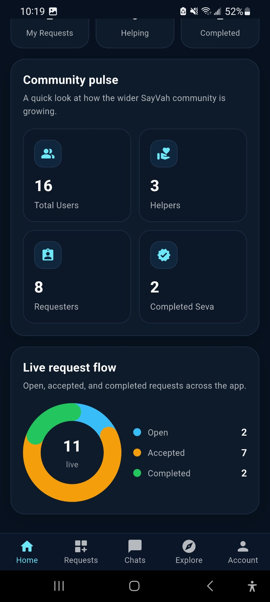
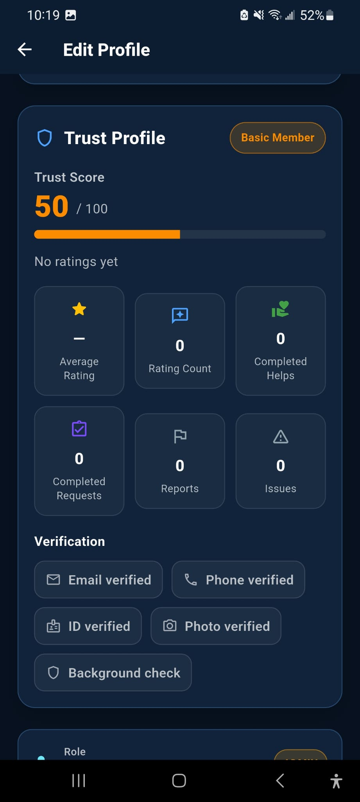
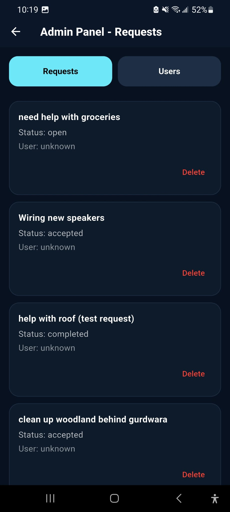

SayVah App
Helping the Sangat help one another.
SayVah is a Sikh community app built to help people request help, offer seva, connect with local Gurdwaras and strengthen community support.

What is SayVah?
SayVah is being created as a dedicated community app for Sikh seva, Gurdwara connection and local support. It allows members of the Sangat to ask for help, offer their time, discover community activity and build trusted connections.
Community Platform
Built for seva, support and trust.
Request Help
Members can create seva requests when they need support from the community.
Offer Seva
Users can browse available seva opportunities and offer help where they can.
Gurdwara Connection
SayVah helps connect people with their local Gurdwaras, events and community activity.
Trust Profiles
Profiles, trust scores and community activity help make the platform safer and more reliable.
Community Pulse
Members can see community activity and understand where support is needed.
Admin Tools
Gurdwara and community admins can manage requests, review activity and support users.
Preview
App Screenshots
SayVah is currently available for testing on both iOS and Android.

Homepage

Create Seva Request

Available Seva

Community Pulse

Trust Profile

Admin Panel
Sangat Works Ecosystem
How SayVah connects to Sangat Works
Sangat Works focuses on Sikh businesses, trades, professionals and community networking. SayVah focuses on seva, Gurdwara support and community help. Together, they are part of a wider mission to use technology to strengthen Sikh communities.